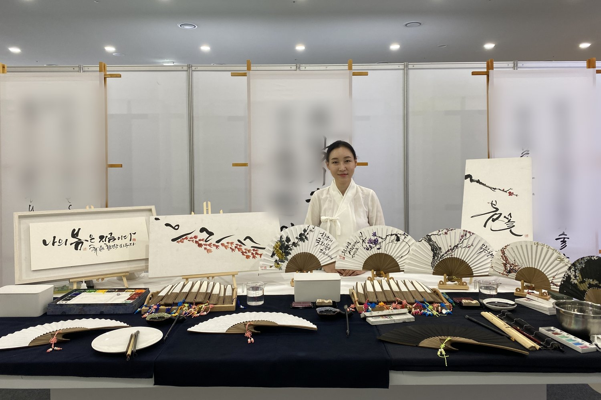

국악·전통 공연
가야금·해금 같은 국악 앙상블부터 대북·모듬북 같은 전통 타악까지 행사 분위기에 맞춰 구성합니다.
- 잘 맞는 행사
- 기념식·준공식 오프닝, 국제행사·외빈 환영, 지역 축제
- 운영 방식
- 행사 성격에 맞춰 편성과 곡 구성 제안
- 무대 크기와 음향에 맞춰 인원 조정
- 리허설과 무대 전환까지 현장 진행
메이커팀 › 공연 섭외
행사 성격과 관객에 맞춰 공연팀을 고르고 무대 시간표와 음향, 리허설까지 맞춰 운영합니다. 공연과 출연진 섭외는 대중문화예술기획업 등록 사업자인 주식회사 위메이커가 직접 맡습니다.
가야금·해금 같은 국악 앙상블부터 대북·모듬북 같은 전통 타악까지 행사 분위기에 맞춰 구성합니다.

현악 4중주, 관악 앙상블처럼 격식 있는 자리에 맞는 연주를 로비나 무대 규모에 맞춰 편성합니다.

한복 차림의 작가가 대형 캔버스에 붓으로 행사 메시지를 쓰고 그림을 더해 무대 위에서 작품을 완성합니다. 완성작은 행사 포토월로 쓰거나 소장할 수 있습니다.

참가자가 붓으로 직접 한글을 써 보는 한국 문화 체험입니다. 박람회 체험 부스나 강의형 클래스로 운영하고, 외국인 참가자를 위해 영어로도 진행합니다.
필요한 것만 골라 맡기셔도 됩니다.
준비 방법은 기업 행사 공연 고르는 법에서 볼 수 있습니다.